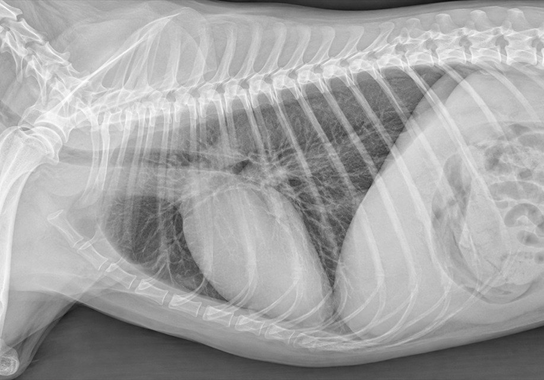
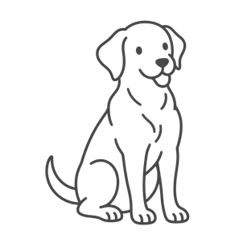
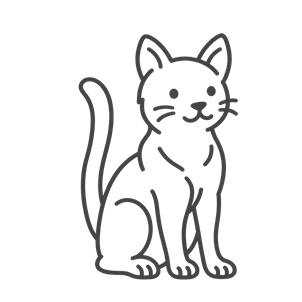

Medical Checkup Center
건강검진 센터
"
We care for every companion with
thoughtful and appropriate treatment. "
thoughtful and appropriate treatment. "
SCROLL DOWN
Onyuldam
Medical
Medical
건강검진 센터 .
건강검진 센터
면밀한 진단으로 면밀한 치료까지

건강검진 센터
24시 온율담동물의료센터 건강검진센터는 반려동물이 오래 건강하게 지내도록
나이와 상태에 맞춘 검진을 하고 있습니다.
반려동물도 어린 시기, 중년기, 노년기를 지나며
나이마다 잘 걸리는 병이 다릅니다.
게다가 사람보다 훨씬 빨리 나이 들기 때문에, 시기마다 알맞은 검진으로 위험 요인을 미리 막고 병을 일찍 찾아 관리하는 것이 반려 가족의 건강을 지키는 길입니다.
Process
건강검진은
프로세스
이런 순서로 진행합니다
반려 가족들의 건강을 진단합니다.
-
Step
01문진표 작성
문진표를 작성해 반려동물의
건강 상태와 생활 습관을
살핀 뒤 수의사와 상담합니다. -
Step
02신체검사
뼈 · 관절 촉진, 심장 청진, 혈압 측정,
피부 · 입안 · 눈 확인까지
신체검사를 합니다. -
Step
03채혈 및 혈액검사
채혈을 거쳐 반려 가족에게
필요한 혈액 검사를 합니다.
-
Step
04영상검사
방사선 촬영 / 초음파 검사를 거쳐
반려 가족에게 필요한
검사를 합니다. -
Step
05결과 상담
검진 결과를 담당 수의사와 함께 보며
상담을 거쳐 반려 가족에게 필요한
관리와 치료 계획을 세웁니다.
Object
강아지 / 고양이
건강검진항목
강아지와 고양이
검진 항목을 확인해 보세요.

＊ 공복 유지 필수
-
- 신체검사 (피부/눈/귀/치아/관절)
- 혈압측정
- 항체가 검사
- 혈액검사 (혈청화학 검사 10종/
적혈구 검사) - 혈액검사 (혈청화학 검사 17종/
적혈구+전해질 검사) - 호르몬검사 (T4)
- 분변검사/소변검사
- 방사선검사 (흉부/복부)
- 방사선검사 (흉부/복부/관절)
- 복부초음파
- 복부초음파/
심장초음파 - 심장사상충 무료 검사
- 3살 이하
추천
- 3살 이상 -
7살 이하 추천
- 7살 이상
추천
강아지 건강검진 추가 선택 가능
- 심장기능평가 (심장초음파)
- 신장기능평가 (SOMA)

＊ 공복 유지 필수
-
- 신체검사 (피부/눈/귀/치아/관절)
- 혈압측정
- 항체가 검사
- 혈액검사 (혈청화학 검사 10종/
적혈구 검사) - 혈액검사 (혈청화학 검사 17종/
적혈구+전해질 검사) - 호르몬검사 (T4)
- 신장기능평가 (SDMA)
- 신장기능평가 (ProBNP/심장초음파)
- 분변검사/
소변검사 - 방사선검사 (흉부/복부)
- 복부초음파
- 3살 이하
추천
- 3살 이상 -
7살 이하 추천
- 7살 이상
추천
고양이 건강검진 추가 선택 가능
- 심장기능평가 (ProBNP/심장초음파)
- 신장기능평가 (SOMA)
- 면역관련 감염여부 평가 (FeLV/FIV kit)
Age
강아지/고양이
나이환산표
이런 순서로 진행합니다
반려 가족들의 건강을 진단합니다.
강아지 나이환산표
강아지
- 1년령
- 2년령
- 3년령
- 4년령
- 5년령
- 6년령
사람
- 16세
- 24세
- 29세
- 34세
- 39세
- 44세
강아지
- 7년령
- 8년령
- 9년령
- 10년령
- 12년령
- 14년령
사람
- 49세
- 54세
- 59세
- 64세
- 74세
- 84세
고양이 나이환산표
고양이
- 1년령
- 2년령
- 3년령
- 4년령
- 5년령
- 6년령
사람
- 15세
- 24세
- 28세
- 32세
- 36세
- 40세
고양이
- 7년령
- 8년령
- 9년령
- 10년령
- 12년령
- 14년령
사람
- 44세
- 48세
- 52세
- 56세
- 64세
- 72세